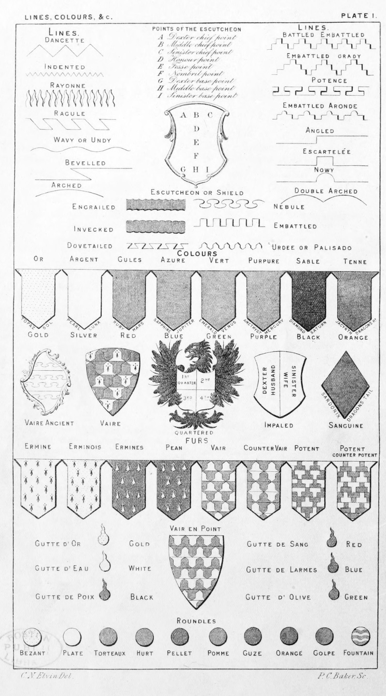

Plate 1.

Plate 1.
Lines. All the Ordinaries and Subordinaries are subject to the accidental forms of Lines,
e.g., P. 3, 6, 12, 13, 14, etc.
Points of the Escutcheon. Parts of the Shield denoting the position of the Charges.
Lines.
Colours. Are divided into three classes, viz.: Metals, Colours, and Furs. See Tinctures.
Metals
Or, Represented in engraving by Dots
Argent. Left quite plain
Colours
- Gules
- Represented in engraving by perpendicular lines.
- Azure
- Represented in engraving by horizontal lines.
- Vert
- Represented in engraving by diagonal lines from dexter to sinister.
- Purpure
- Represented in engraving by diagonal lines from sinister to dexter.
- Sable
- Represented in engraving by horizontal and perpendicular lines crossing each other.
- Tenne
- Represented in engraving by diagonal lines from sinister to dexter crossed by horizontal lines.
- Sanguine
- Represented in engraving by diagonal lines from dexter to sinister crossing each other.
The following paradigm will explain how some authors blazon Arms of Sovereigns by Planets, of Peers by Precious Stones, etc.
It was the adoption of such pedantries as this by the old writers that tended to make Heraldry repulsive and unintelligible
to the modern apprehension.
The only recognised way now is to blazon all by the terms given under Metals, Colours, and Furs.
The planet symbols in the 5th column may not render correctly in older browsers.
| Or |
Gold |
Yellow |
Sol |
☉ |
Leo |
Topaz |
| Argent |
Silver |
White |
Luna |
☾ |
Cancer |
Pearl |
| Gules |
Iron |
Red |
Mars |
♂ |
Aries |
Ruby |
| Azure |
Tin |
Blue |
Jupiter |
♃ |
Taurus |
Sapphire |
| Vert |
Copper |
Green |
Venus |
♀ |
Gemini |
Emerald |
| Purpure |
Quick Silver |
Purple |
Mercury |
☿ |
Sagittarius |
Amethyst |
| Sable |
Lead |
Black |
Saturn |
♄ |
Capricorn |
Diamond |
| Tenne |
|
Orange |
Dragon's Head |
☊ |
|
Jacynth & Hyacinth |
| Sanguine |
|
Murry |
Dragon's Tail |
☋ |
|
Sardonyx |
Furs
- Ermine.
- a white field with black spots
- Erminois.
- a gold field with black spots
- Ermines.
- black field with white spots
- Pean
- black field with gold spots
- Vair.
- white and blue, represented by figures of small escutcheons ranged in lines so
that the base argent is opposite to the base azure
- Counter Vair.
- the same as Vair only the
figures are placed base
against base and point
against point
- Vair in Point.
- the figures standing exactly one upon another flat upon flat
- Vaire.
- when the figures forming the Vair are of more than two tinctures
- Vaire Ancient.
- represented by lines nebulee separated by straight lines
- Potent.
- resembles the head of crutches placed head to head
- Potent counter potent.
- also termed Varry cuppa, and Cuppa, same as the last placed foot to head
Gutte, a drop (gutta)
- Gutte d'or
- Drops of Gold.
- Gutte d'eau
- Drops of Water.
- Gutte de poix
- Drops of Pitch.
- Gutte de sang
- Drops of Blood.
- Gutte de larmes
- Drops of Tears.
- Gutte d' olive
- Drops of of Oil.
Roundels
- Roundle or.
- is termed a Bezant.
- Roundle ar.
- is termed a Plate.
- Roundle gu.
- is termed a Torteaux.
- Roundle az.
- is termed a Hurt.
- Roundle sa.
- is termed a Pellet.
- Roundle vert.
- is termed a Pome or Pomme.
- Roundle sanguine.
- is termed a Guze.
- Roundle tenne.
- is termed an Orange.
- Roundle purpure.
- is termed a Golpe.
- Roundle barry wavy ar. az.
- is termed a Fountain.